Development
FIGHTING GAME INPUT SYSTEM
This work shows a full breakdown of my development process
I wanted to solve a problem:
How do 2d fighters (like street fighter) interpert
directional inputs from the player
like down-left-right-punch and turn them into fireballs?
Background information on fighting game commands

I began by planning what the system would need. Other than the basic task of
correctly reading the inputs, the system would also have to:
1. Only read inputs from a set number of seconds.
2. Excecute the special move even if the inputs are slightly wrong.
3. Control which special move is excecuted if two different patterns are inputted within the time frame.
4. Not excecute a special move twice by accident.

Next, I brainstormed what data structures to use to store the inputs.
Removing from the beginning of a normal array and shifting would cause a very large big O time, so that was not an option.
A hashmap did not have the order that I needed.
A linked list would work, but another idea I had seen in a midterm exam question proved better.
The idea was: an array that itself did not shift, but what you considered the end and beginning of the array did.
I stored the newest input in the array at the index held in the variable end.
The oldest input would be in the array at the index held in the variable beg.
Whenever an input was added, it would replace the value at index beg and the two indeces would shift right one.

I continued planning by figuring out how to solve each of the aformentioned
additional requirements.

For requirement 1, (Set input time frames for the player) I decided to
remove the oldest input every few milliseconds. This was done by
adding an input to the array that would not be recognized as valid (None).
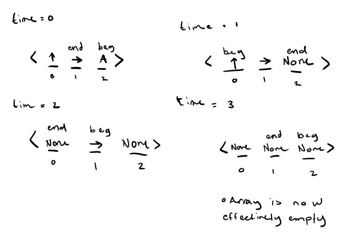
To complete requirement 2, (allow slightly off commands) I used a "checklist" system when reading the array for valid special move commands.
Each special move had a "checklist" of inputs it needed to see before it could be excecuted. Each time an input
on the checklist was seen, it would be "checked".
An input on the checklist could not be checked until all previous inputs on the checklist had already been checked.
This ensured the order of the command was correct while also allowing incorrect inputs to be inbetween the correct ones.

For requirement 3 (dont excecute two commands), I simply placed a priority system for each special move. If two moves were read from the array at once,
only the higher priority move would excecute.
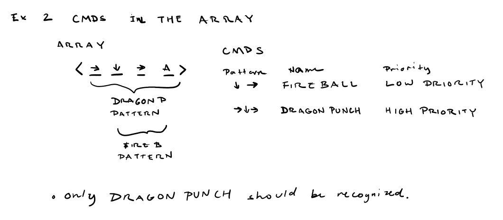
To solve requirement 4 (only excecute a command once), I removed all
inputs from the array and replaced them with None objects after any special move was found.
Next, I rounded out the planning stage with a general class outline.

After That I created some pseudo code.
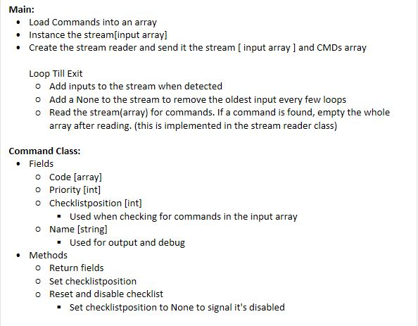
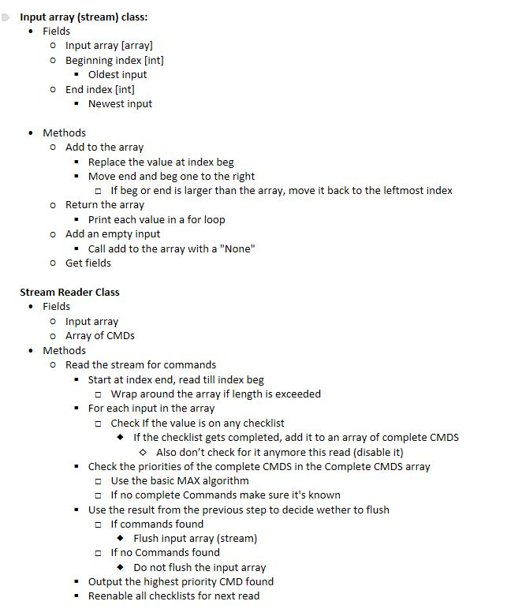
Finally, after multiple refactors, the code below was created. I used Python 3 for the implementation.
Note: the implementation uses numpad fighting game notation, where each direction
is represented by a number. For more info click
here.
The implemented code stores any special move as a class-

and the array( or stream ) as it's own class.

It holds all the inputs in an array, and has a distinct beginning(the oldest
input) and end (the most recent input)
index. When an input is added, it is placed at the index of the beginning, replacing
the previous value.
The end and beg indeces are then shifted one to the right, which
shifts the new input to the end index and the oldest input to the beg index.
The beg and end indeces will also wrap back around to the left once they reach the end of the array.

The array will also replace the oldest input with an empty
input every few milliseconds. This creates the timing window for
the command to be excecuted by the player.


The array and all special moves are held in a stream reader class.

It looks for inputs when triggered by checking each input in the array against
the specific codes stored in each CMD (special move) class. If an input matches
the current targeted character in the code, the targeted code is shifted over or "checked".
Once the whole code has been checked for a CMD, it is added to a list of
found CMDS.
This way of "checklisting" the required codes allows the player to
input a slightly off code (such as down-up-right-left-punch where down-right-punch
is the code) and still get the desired special move.

The reader then checks for the priority of each code before outputing
the highest priority and most recent special move. This prevents the reader from outputting two
special moves on the same read.

The array is then flushed to prevent the reader from reading the same array information twice
(which can result in unwanted specials being read)

The resulting program works as follows:
For more information and the full code, visit the github repo.
Maya Python Programs
The following program I developed generates a Poly shape chain of links in Maya 2020.
you can choose the number of links, the length of the links and the thickness of the links.
The slider mins and maxes dynamically change to prevent the links from clipping. The links
are parented to the first link and renamed. A video demonstration can be seen below.
This program uses a window class which first creates the UI.
This window also has an associated Chain class object.
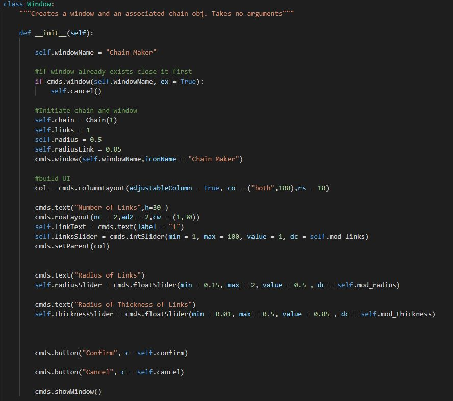
The chain object has associated ring class objects stored in an array. The
first (root chain) remains at index 0 at all times.
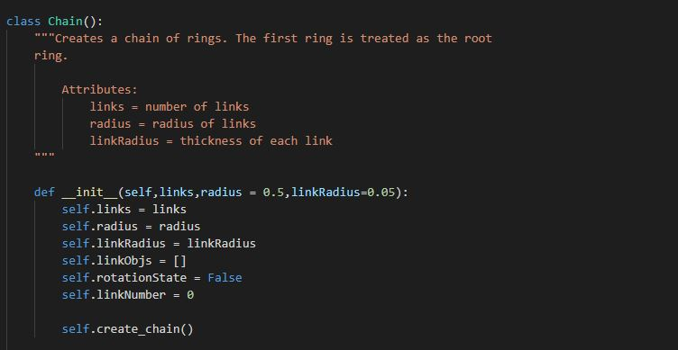
The rectangular links(rings) are created from a torus shape that has four slightly stretched loops.
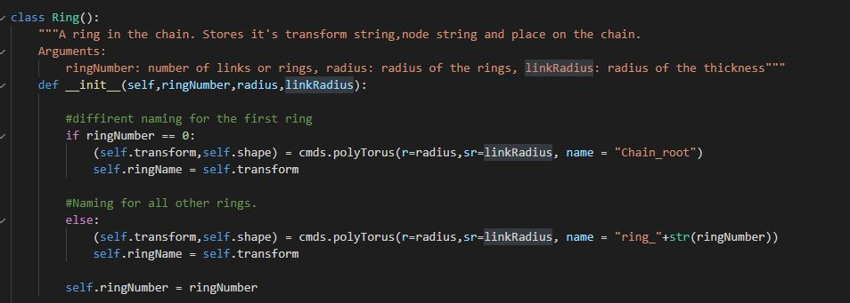
Every link is moved based on it's position in the chain and its 2 radi.
The function that determines this distance is:
RingPosition*(ringRadius+(ringRadius - Thickness of a ring)).
Each link is also renamed and parented to the root ring.
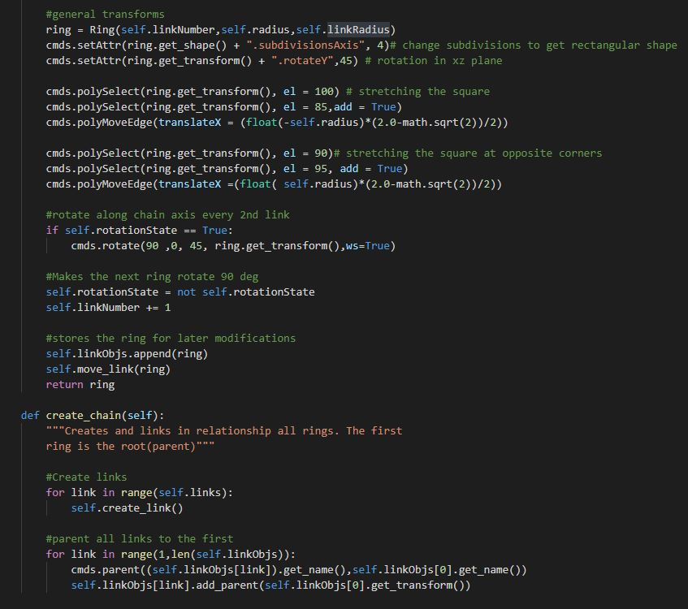
Whenever the slider is changed, the old chain is deleted and a new chain is created. This is quicky excecuted by deleting the root link and instancing a new Chain class. While the overhead
may be larger using this strategy VS moving and resizing each link, the implementation is much simpler and more clear. This allows for easier changes, troubleshooting, and teaching. I also reasoned that this program would not be used
during a runtime of a game, so it's overhead would have less precedence over clarity.
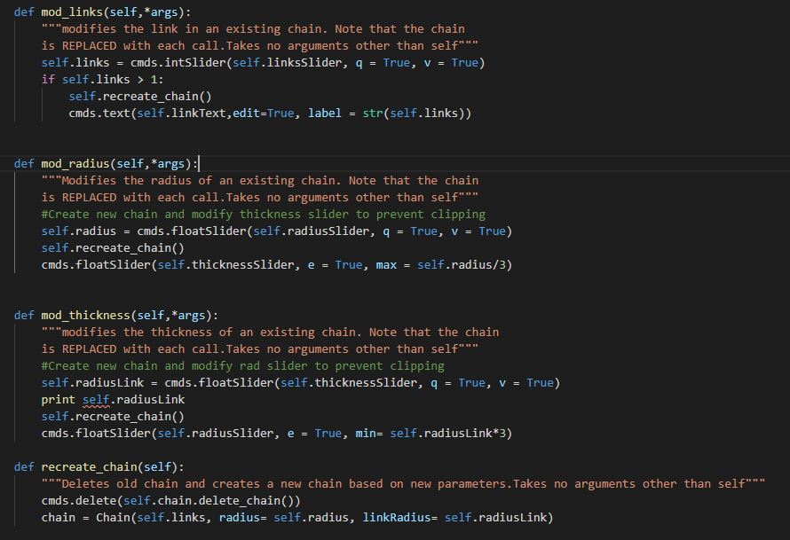
Changing one of the radius or link radius effects the other's maxes/mins.
This is to prevent the links from colliding and clipping through each other.
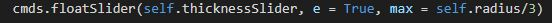
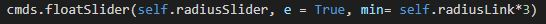
The cancel button deletes the current root link, removing the chain of poly objects.
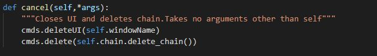
Confirming simply closes the UI window, leaving the chain to be used.
For the full code visit the project repository.
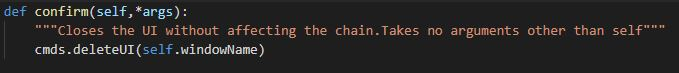
HTML and CSS Website
This current website was built by me in HTML and CSS. A link to the Project Repository
can be found here.